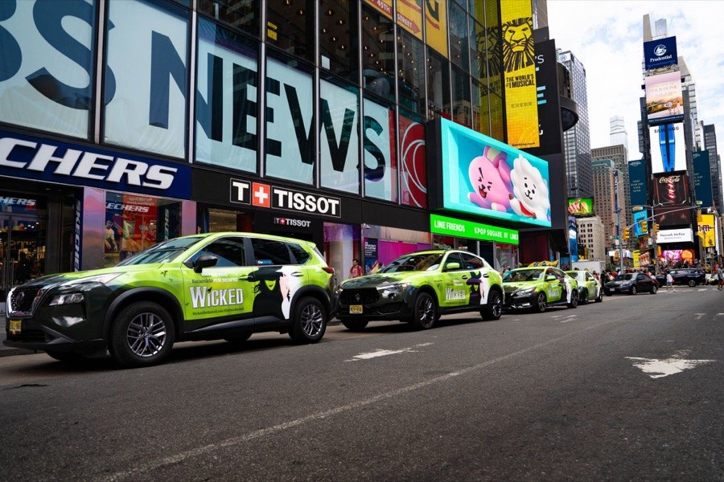
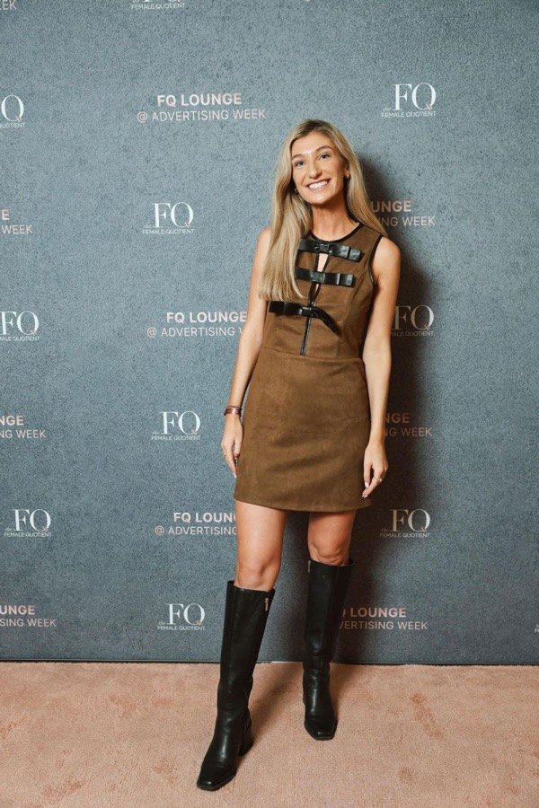

Nicole Foley
Making brands impossible to miss, in the real world.
Senior Account Executive at Lime Media, an experiential marketing company. Based in Greater Philadelphia.


Hi, I’m Nicole.
I’m a Senior Account Executive at Lime Media, where I work with brands and agency partners to bring creative ideas to life through experiential marketing, mobile out-of-home, pop-ups and brand activations.
Before Lime, I helped shape the new agency division at Carvertise, where we put 40 bright green Wicked cars on the streets of Manhattan, and spent nearly three years at Digitas Health running social campaigns for GSK. I started out in social media and content, and today I’m also the Philadelphia Lead for The Media Dinner Club.
“I always felt that I had an advocate at Pango.”
“She even called me within 24 hours to update me on the progress of my loan application.”
“She was kind, attentive and very patient with me. Give her a raise ASAP!!”
University of Delaware
Degree and year
Monday Girl & The Media Dinner Club
A member of Monday Girl, a New York network for women in business, and the Philadelphia Lead for The Media Dinner Club.
Interests
A longtime Wicked fan who can’t resist snapping eye-catching billboards. More from Nicole
Career journey.
Nicole has worked in marketing and advertising since 2018, moving from social media and content to healthcare marketing at Digitas Health, agency partnerships at Carvertise and experiential marketing at Lime Media. Along the way she has led $0.7M+ in campaigns for GSK, launched a brand’s first TikTok campaign and helped put 40 bright green Wicked cars on the streets of Manhattan.
Senior Account Executive · Lime Media · Remote
- Works with brands and agency partners to bring creative ideas to life through experiential marketing, mobile out-of-home, pop-ups, brand activations and custom-built experiences.
Account Executive · Seen Media Group · New York
- Highlights from her résumé
Philadelphia Lead · The Media Dinner Club · Freelance
Agency Programs Manager · Carvertise
- Joined the newly formed agency division, helping shape how it engages, supports and scales partnerships across the advertising ecosystem.
- Helped bring 40 bright green Wicked cars to Times Square and the streets of New York for Wicked the Musical.
Account Executive · Digitas Health · Philadelphia
- Account lead on $0.7M+ in social media and print campaigns for GSK, from creative briefing to distribution.
- Led 50+ digital work streams across brand, legal, strategy and creative teams.
- Patient-journey research behind a 3-month social campaign that earned 16 million impressions and 58K landing page views.
- Spearheaded the brand’s first TikTok campaign: a 24% response rate, 8% above industry benchmarks.
- Cut project delivery timelines by 25% for NUCALA social campaigns, and steered ads through GSK’s legal and regulatory review.
Digital Account Executive · Creative Solutions International
- Social content, blog articles, infographics and video, plus paid campaigns on Google Ads and Facebook Ads that grew web traffic and leads.
Account Executive · Pango Financial
- Guided small businesses through their Paycheck Protection Program loan applications, earning a run of five-star reviews.
Social media, content & sales · Tribe Kelley, Dallas Shaw, Uncommon James · Nashville
- Product-launch campaigns on Instagram and Pinterest reaching 118,000 and 300,000 followers, email campaigns to 20,000 customers, and influencer and product photography.
Early career · Victoria’s Secret PINK, Ross Stores, United Nations Project Xite, FashInvest
- Campus social media and events for PINK drawing 200+ students, buying at Ross, and one of 25 students consulting for UN-sponsored solution-makers.
University of Delaware
- Degree
What she brings.
Let’s connect.
Planning a brand experience, or want to talk shop? Send Nicole a note and she’ll get back to you.